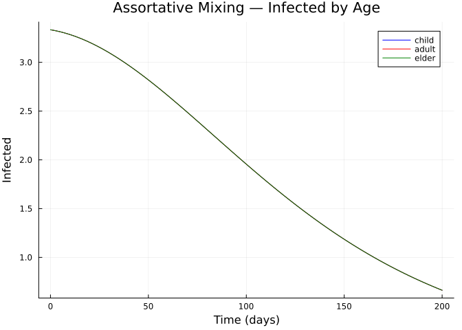
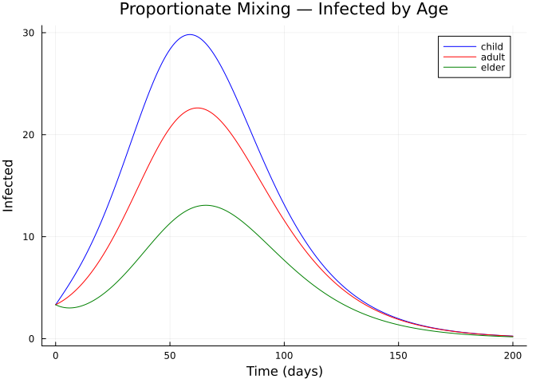
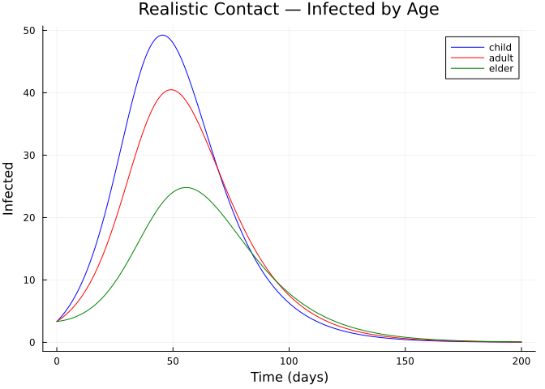
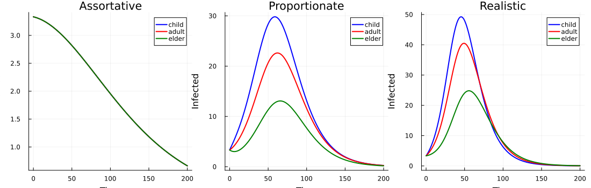
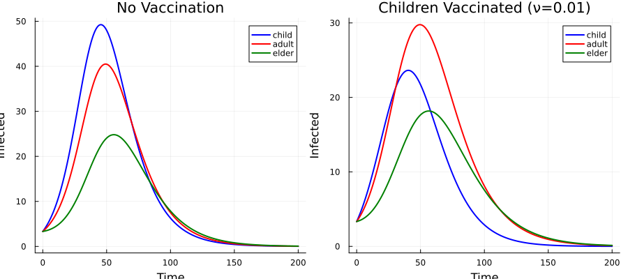

Age Stratification
Introduction
This vignette explores age stratification using Odin.jl’s categorical extension. Starting from a simple SIR model, we stratify by age group and compare how different contact (mixing) patterns — assortative, proportionate, and custom — affect epidemic dynamics. We then demonstrate targeted vaccination of specific age strata.
Setup
using Odin
using Plots
using LinearAlgebraBase SIR Model
sir = SIR(; S0=990.0, I0=10.0, R0=0.0)
println("Base SIR: ", species_names(sir), " — ", transition_names(sir))Base SIR: [:S, :I, :R] — [:inf, :rec]Three Age Groups
We define three age groups representing children, adults, and elderly:
age_groups = [:child, :adult, :elder]3-element Vector{Symbol}:
:child
:adult
:elderMixing Pattern 1: Assortative (Within-Group Only)
In assortative mixing, each age group only contacts itself. This is equivalent to running three independent epidemics:
C_assort = Matrix{Float64}(I, 3, 3)
println("Assortative contact matrix:")
display(C_assort)
sir_assort = stratify(sir, age_groups; contact=C_assort)
println("\nSpecies: ", species_names(sir_assort))
println("Transitions: ", ntransitions(sir_assort))Assortative contact matrix:
Species: [:S_child, :I_child, :R_child, :S_adult, :I_adult, :R_adult, :S_elder, :I_elder, :R_elder]
Transitions: 6
3×3 Matrix{Float64}:
1.0 0.0 0.0
0.0 1.0 0.0
0.0 0.0 1.0gen_assort = compile(sir_assort; mode=:ode, frequency_dependent=true, N=:N,
params=Dict(:beta => 0.3, :gamma => 0.1, :N => 1000.0))
sys = System(gen_assort, (beta=0.3, gamma=0.1, N=1000.0))
reset!(sys)
times = collect(0.0:0.5:200.0)
result_assort = simulate(sys, times)
sn = species_names(sir_assort)
p = plot(title="Assortative Mixing — Infected by Age",
xlabel="Time (days)", ylabel="Infected", linewidth=2)
colors = [:blue, :red, :green]
for (i, g) in enumerate(age_groups)
idx = findfirst(==(Symbol(:I_, g)), sn)
plot!(p, times, result_assort[idx, 1, :], label=string(g), color=colors[i])
end
p
With assortative mixing and equal initial conditions, all three groups have identical epidemic curves.
Mixing Pattern 2: Proportionate (Homogeneous)
In proportionate mixing, everyone contacts everyone equally. Activity levels can differ between groups:
# Activity levels: children most active, elderly least
activity = [3.0, 2.0, 1.0]
C_prop = activity * activity' # outer product
# Normalise so max entry = 1
C_prop ./= maximum(C_prop)
println("Proportionate contact matrix:")
display(round.(C_prop; digits=2))
sir_prop = stratify(sir, age_groups; contact=C_prop)
gen_prop = compile(sir_prop; mode=:ode, frequency_dependent=true, N=:N,
params=Dict(:beta => 0.3, :gamma => 0.1, :N => 1000.0))
sys = System(gen_prop, (beta=0.3, gamma=0.1, N=1000.0))
reset!(sys)
result_prop = simulate(sys, times)
p = plot(title="Proportionate Mixing — Infected by Age",
xlabel="Time (days)", ylabel="Infected", linewidth=2)
sn_prop = species_names(sir_prop)
for (i, g) in enumerate(age_groups)
idx = findfirst(==(Symbol(:I_, g)), sn_prop)
plot!(p, times, result_prop[idx, 1, :], label=string(g), color=colors[i])
end
pProportionate contact matrix:
3×3 Matrix{Float64}:
1.0 0.67 0.33
0.67 0.44 0.22
0.33 0.22 0.11
Mixing Pattern 3: Realistic Contact Matrix
A realistic contact matrix has strong within-group (assortative) contact, especially for children, with weaker cross-group contact:
C_real = [3.0 1.0 0.3;
1.0 2.0 0.5;
0.3 0.5 1.5]
println("Realistic contact matrix:")
display(C_real)
sir_real = stratify(sir, age_groups; contact=C_real)
gen_real = compile(sir_real; mode=:ode, frequency_dependent=true, N=:N,
params=Dict(:beta => 0.15, :gamma => 0.1, :N => 1000.0))
sys = System(gen_real, (beta=0.15, gamma=0.1, N=1000.0))
reset!(sys)
result_real = simulate(sys, times)
p = plot(title="Realistic Contact — Infected by Age",
xlabel="Time (days)", ylabel="Infected", linewidth=2)
sn_real = species_names(sir_real)
for (i, g) in enumerate(age_groups)
idx = findfirst(==(Symbol(:I_, g)), sn_real)
plot!(p, times, result_real[idx, 1, :], label=string(g), color=colors[i])
end
pRealistic contact matrix:
3×3 Matrix{Float64}:
3.0 1.0 0.3
1.0 2.0 0.5
0.3 0.5 1.5
Comparing All Three Mixing Patterns
p = plot(layout=(1,3), size=(1100, 350),
title=["Assortative" "Proportionate" "Realistic"])
for (col, res, snames) in [(1, result_assort, sn),
(2, result_prop, sn_prop),
(3, result_real, sn_real)]
for (i, g) in enumerate(age_groups)
idx = findfirst(==(Symbol(:I_, g)), snames)
plot!(p, times, res[idx, 1, :], subplot=col,
label=string(g), color=colors[i], linewidth=2,
xlabel="Time", ylabel="Infected")
end
end
p
println("Final attack rates (% recovered):")
for (label, res, snames) in [("Assortative", result_assort, sn),
("Proportionate", result_prop, sn_prop),
("Realistic", result_real, sn_real)]
print(" $label: ")
for g in age_groups
R_idx = findfirst(==(Symbol(:R_, g)), snames)
S_idx = findfirst(==(Symbol(:S_, g)), snames)
I_idx = findfirst(==(Symbol(:I_, g)), snames)
pop = res[S_idx, 1, 1] + res[I_idx, 1, 1]
ar = pop > 0 ? round(100 * res[R_idx, 1, end] / pop; digits=1) : 0.0
print("$g=$(ar)% ")
end
println()
endFinal attack rates (% recovered):
Assortative: child=12.0% adult=12.0% elder=12.0%
Proportionate: child=68.8% adult=54.2% elder=32.7%
Realistic: child=80.9% adult=71.4% elder=49.3%Targeted Vaccination
We can add vaccination to specific age strata by composing with a vaccination sub-model. Here we vaccinate only children:
# Start with the realistic-contact stratified SIR
sir_stratified = stratify(sir, age_groups; contact=C_real)
# Vaccination sub-model targeting children only
vax_child = EpiNet(
[:S_child => 0.0, :V_child => 0.0],
[:vax_child => ([:S_child] => [:V_child], :nu)]
)
# Compose vaccination into the stratified model
sir_vax = compose(sir_stratified, vax_child)
println("Species: ", species_names(sir_vax))
println("Transitions: ", ntransitions(sir_vax))Species: [:S_child, :I_child, :R_child, :S_adult, :I_adult, :R_adult, :S_elder, :I_elder, :R_elder, :V_child]
Transitions: 13# Compare: no vaccination vs vaccinating children
gen_vax = compile(sir_vax; mode=:ode, frequency_dependent=true, N=:N,
params=Dict(:beta => 0.15, :gamma => 0.1, :nu => 0.0, :N => 1000.0))
times = collect(0.0:0.5:200.0)
# No vaccination
sys_nv = System(gen_vax, (beta=0.15, gamma=0.1, nu=0.0, N=1000.0))
reset!(sys_nv)
r_nv = simulate(sys_nv, times)
# With vaccination of children (ν = 0.01/day)
sys_v = System(gen_vax, (beta=0.15, gamma=0.1, nu=0.01, N=1000.0))
reset!(sys_v)
r_v = simulate(sys_v, times)
sn_vax = species_names(sir_vax)
p = plot(layout=(1,2), size=(900, 400),
title=["No Vaccination" "Children Vaccinated (ν=0.01)"])
for (col, res) in [(1, r_nv), (2, r_v)]
for (i, g) in enumerate(age_groups)
idx = findfirst(==(Symbol(:I_, g)), sn_vax)
plot!(p, times, res[idx, 1, :], subplot=col,
label=string(g), color=colors[i], linewidth=2,
xlabel="Time", ylabel="Infected")
end
end
p
println("Attack rates — No vaccination vs Children vaccinated:")
for (label, res) in [("No vax", r_nv), ("Vax children", r_v)]
print(" $label: ")
for g in age_groups
R_idx = findfirst(==(Symbol(:R_, g)), sn_vax)
S_idx = findfirst(==(Symbol(:S_, g)), sn_vax)
I_idx = findfirst(==(Symbol(:I_, g)), sn_vax)
pop = res[S_idx, 1, 1] + res[I_idx, 1, 1]
ar = pop > 0 ? round(100 * res[R_idx, 1, end] / pop; digits=1) : 0.0
print("$g=$(ar)% ")
end
println()
endAttack rates — No vaccination vs Children vaccinated:
No vax: child=80.9% adult=71.4% elder=49.3%
Vax children: child=42.0% adult=60.4% elder=41.3%Vaccinating children — the group with the highest contact rate — reduces the epidemic in all age groups through indirect (herd) effects.
Inspecting Stratified Model Structure
The lower_expr() function reveals the generated ODE system:
exprs = lower_expr(sir_stratified; mode=:ode, frequency_dependent=true, N=:N,
params=Dict(:beta => 0.15, :gamma => 0.1, :N => 1000.0))
println("Generated equations for age-stratified SIR:")
for e in exprs
println(" ", e)
endGenerated equations for age-stratified SIR:
N = parameter(1000.0)
beta = parameter(0.15)
gamma = parameter(0.1)
initial(S_child) = begin
#= /Users/sdwfrost/Projects/odin/Odin.jl/src/categorical/lowering.jl:88 =#
330.0
end
initial(I_child) = begin
#= /Users/sdwfrost/Projects/odin/Odin.jl/src/categorical/lowering.jl:88 =#
3.3333333333333335
end
initial(R_child) = begin
#= /Users/sdwfrost/Projects/odin/Odin.jl/src/categorical/lowering.jl:88 =#
0.0
end
initial(S_adult) = begin
#= /Users/sdwfrost/Projects/odin/Odin.jl/src/categorical/lowering.jl:88 =#
330.0
end
initial(I_adult) = begin
#= /Users/sdwfrost/Projects/odin/Odin.jl/src/categorical/lowering.jl:88 =#
3.3333333333333335
end
initial(R_adult) = begin
#= /Users/sdwfrost/Projects/odin/Odin.jl/src/categorical/lowering.jl:88 =#
0.0
end
initial(S_elder) = begin
#= /Users/sdwfrost/Projects/odin/Odin.jl/src/categorical/lowering.jl:88 =#
330.0
end
initial(I_elder) = begin
#= /Users/sdwfrost/Projects/odin/Odin.jl/src/categorical/lowering.jl:88 =#
3.3333333333333335
end
initial(R_elder) = begin
#= /Users/sdwfrost/Projects/odin/Odin.jl/src/categorical/lowering.jl:88 =#
0.0
end
flow_inf_child_child = (((3.0beta) * S_child) * I_child) / N
flow_inf_child_adult = ((beta * S_child) * I_adult) / N
flow_inf_child_elder = (((0.3beta) * S_child) * I_elder) / N
flow_inf_adult_child = ((beta * S_adult) * I_child) / N
flow_inf_adult_adult = (((2.0beta) * S_adult) * I_adult) / N
flow_inf_adult_elder = (((0.5beta) * S_adult) * I_elder) / N
flow_inf_elder_child = (((0.3beta) * S_elder) * I_child) / N
flow_inf_elder_adult = (((0.5beta) * S_elder) * I_adult) / N
flow_inf_elder_elder = (((1.5beta) * S_elder) * I_elder) / N
flow_rec_child = gamma * I_child
flow_rec_adult = gamma * I_adult
flow_rec_elder = gamma * I_elder
deriv(S_child) = begin
#= /Users/sdwfrost/Projects/odin/Odin.jl/src/categorical/lowering.jl:150 =#
(-flow_inf_child_child - flow_inf_child_adult) - flow_inf_child_elder
end
deriv(I_child) = begin
#= /Users/sdwfrost/Projects/odin/Odin.jl/src/categorical/lowering.jl:150 =#
((flow_inf_child_child + flow_inf_child_adult) + flow_inf_child_elder) - flow_rec_child
end
deriv(R_child) = begin
#= /Users/sdwfrost/Projects/odin/Odin.jl/src/categorical/lowering.jl:150 =#
flow_rec_child
end
deriv(S_adult) = begin
#= /Users/sdwfrost/Projects/odin/Odin.jl/src/categorical/lowering.jl:150 =#
(-flow_inf_adult_child - flow_inf_adult_adult) - flow_inf_adult_elder
end
deriv(I_adult) = begin
#= /Users/sdwfrost/Projects/odin/Odin.jl/src/categorical/lowering.jl:150 =#
((flow_inf_adult_child + flow_inf_adult_adult) + flow_inf_adult_elder) - flow_rec_adult
end
deriv(R_adult) = begin
#= /Users/sdwfrost/Projects/odin/Odin.jl/src/categorical/lowering.jl:150 =#
flow_rec_adult
end
deriv(S_elder) = begin
#= /Users/sdwfrost/Projects/odin/Odin.jl/src/categorical/lowering.jl:150 =#
(-flow_inf_elder_child - flow_inf_elder_adult) - flow_inf_elder_elder
end
deriv(I_elder) = begin
#= /Users/sdwfrost/Projects/odin/Odin.jl/src/categorical/lowering.jl:150 =#
((flow_inf_elder_child + flow_inf_elder_adult) + flow_inf_elder_elder) - flow_rec_elder
end
deriv(R_elder) = begin
#= /Users/sdwfrost/Projects/odin/Odin.jl/src/categorical/lowering.jl:150 =#
flow_rec_elder
endPopulation Conservation
for (label, res, snames) in [("Assortative", result_assort, sn),
("Proportionate", result_prop, sn_prop),
("Realistic", result_real, sn_real)]
total = sum(res[:, 1, end])
println("$label — total population at t=200: $(round(total; digits=2))")
endAssortative — total population at t=200: 1000.0
Proportionate — total population at t=200: 1000.0
Realistic — total population at t=200: 1000.0Summary
| Mixing Pattern | Description | Effect |
|---|---|---|
| Assortative | Identity matrix; groups isolated | Identical epidemics per group |
| Proportionate | Outer product of activity; well-mixed | Higher-activity groups hit harder, faster |
| Realistic | Strong diagonal, weaker off-diagonal | Children peak first, elderly buffered |
Key takeaway: stratify() makes it trivial to test different mixing hypotheses — just swap the contact matrix while keeping the same base epidemiology.